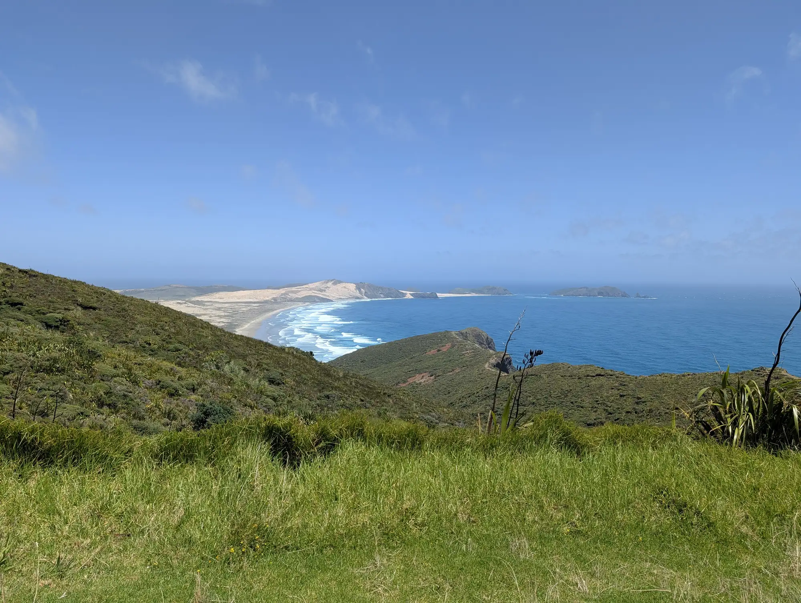
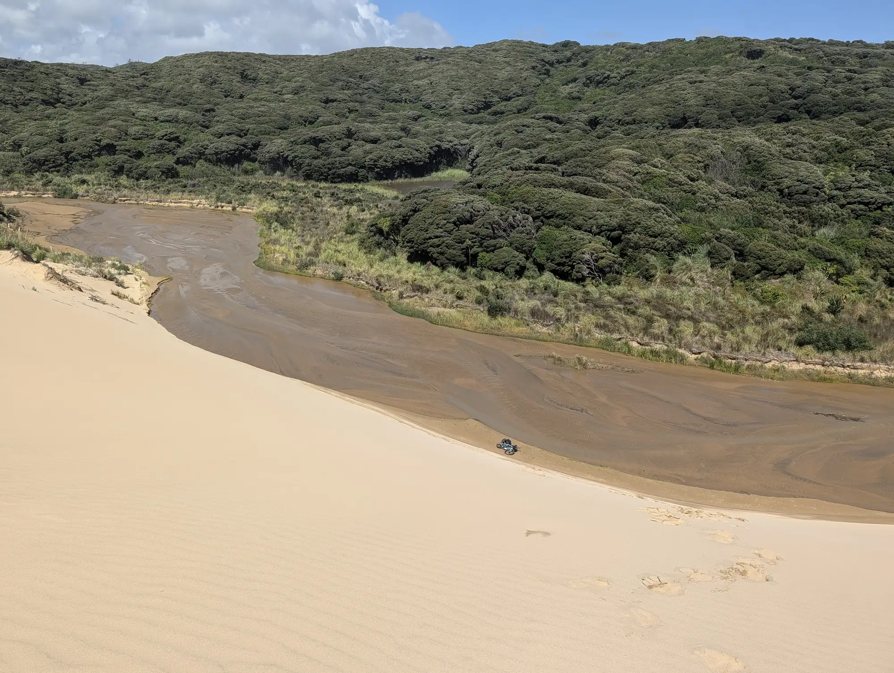
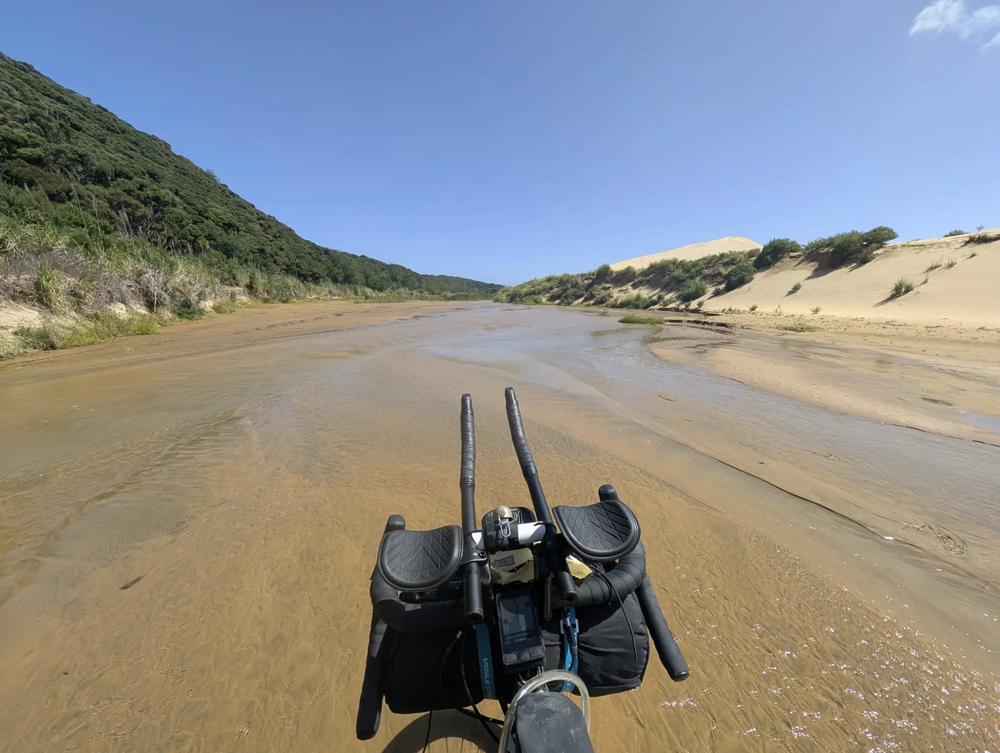
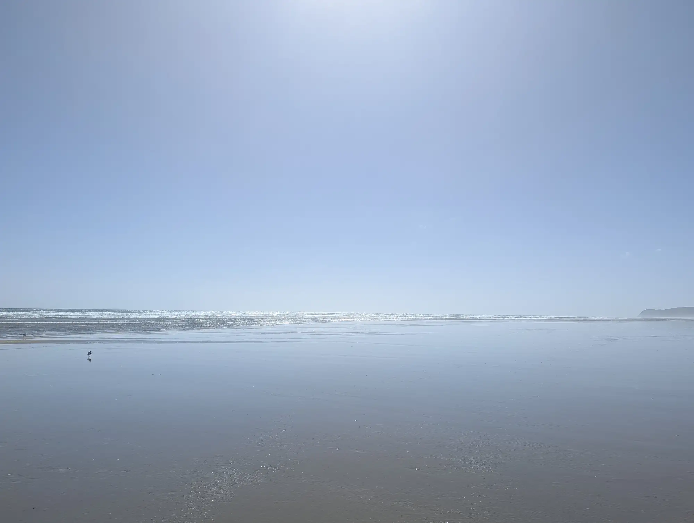
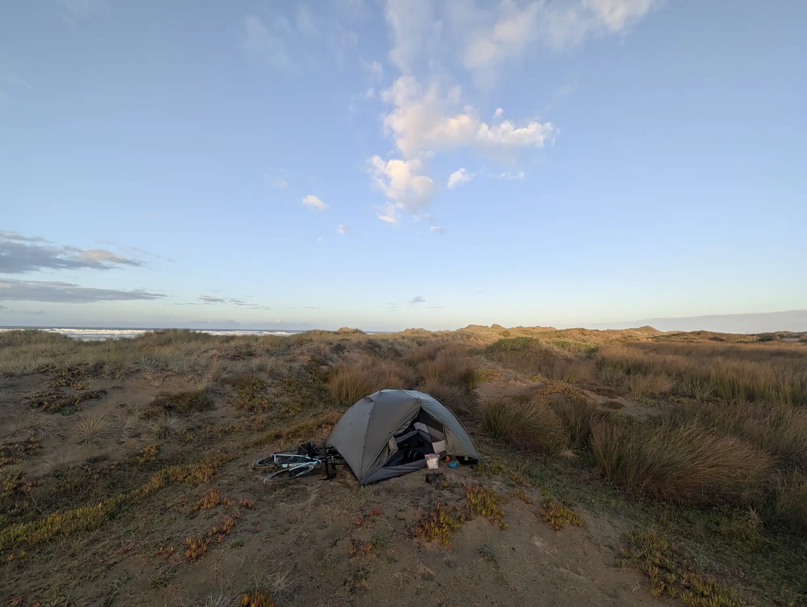

When last I posted, I was descending a hill, laughing out loud at the beginning of a wild adventure - one which had only just begun.
Cut to black, roll credits.
Of course, real life adventures are not like their movie versions.
The decent flattened out and became a climb. What goes down, must, in all likelihood go back up, and the hills in New Zealand almost guarantee this near certainty.
I pedaled through my upper gears, milking my kinetic energy for all it was worth. Click. I shifted down a gear as I bled more speed and the cadence of my pedal strokes started to fall. Click. Another shift, down again. Click. Another. What was descending before began to steepen into a pretty serious climb. 2 clicks up shifted my gears so that I could stand and put my full weight on the pedals. I cranked for a bit, but the hill just kept going. Click, this time down. Defeat. It was a big hill. I sat back down to grind it out.

My crazy adventure kept going, one pedal stroke at a time, in all of its gritty reality. Starting the track at the lighthouse just 30 minutes before felt gratifying but, in my reality, very little had actually changed. I was still riding my bike, still climbing a hill, and sweating through my shirt under the same hot sun
‘And this,’ I thought, the cranks of my pedals are only turning my thoughts, ‘is how a real adventure actually works’. These kinds of adventures - lives for that matter - are composed of moments that make it into the story (starts, high points, and ends), surrounded by all the mundane moments that do not (climbing the hills in between). Those moments that compose that mundane background are like the ‘boring’ meat and potatoes of life. It’s a background which nourishes the adventurer to (and through) the ice cream and Chardonnay highlights. And while those highlights are sweet, I find myself drawn to those mundane meat-and-potato moments just as much.
The hill passed eventually. I found my rhythm and the meters of elevation ticked away. Following my loaded GPS map, I took a wide right onto a road, with a sign for the Giant Te Paki Sand Dunes. I was excited. I’m a sucker for seeing cool things, and this was no exception.
The black line I was following curved around the base of the dunes, and then along their base, crossing a wash which was quite full from the rains over the past few days1.

I looked down at my GPS track - it seemed to go dead-center through the stream. I checked the guide book. Apparently there was a well packed sand road that traveled right around the dunes. The guide book read:
“Turn right at Te Paki Stream Rd. It’s gravel followed by sandy tracks beside, and sometimes in, the stream.”
‘Beside!?’ I thought. ‘Seems to me that IN would be a more accurate preposition to describe this situation.’
Suspecting I had made a navigational error, I checked yet again, and found that, indeed, this was the right road.
I considered my options2. I could push the bike through the river but I worried about sinking into the sand. I could go over the sand dunes, with potentially the same issue, or I could find another way around the creek - another entrance on a logging road, or a helicopter perhaps.
‘Well,’ I thought, taking off my shoes and socks and rolling up my pants to my knees. ‘Nothing to it but to crack on.’ With the decision made, I rolled the bike into the stream.
Much to my surprise, the sand was pleasantly firm, an improvement on my expectations. The going was not actually that bad. In fact, it was quite peaceful. The clear water splashed with each step, coalescing around my ankles. My toes dug into the sand with each step. It became a fun challenge to find the best firmest path through the rivers banks, bars and channels of the braided stream.

Along the way I stopped briefly to climb a sand dune, and eat some cattails. Life was good, even with the water.

As I got closer to the beach, the sand flattened out becoming less compacted and making the walking slightly more arduous. My feet as well as the bike dug in that much more, and the sand was generally looser. But the end was in sight.
As all things do, the creek section came to an end, and the expanse of the Tasman Sea was laid out ahead of me. Waves crashed onto a beach which stretched into a distant haze. White seabirds dotted the beach and sky tucking themselves against the wind, which drove from the west off the water. The landscape appeared to be infinite in all directions except the way I had come.

I put my shoes3 back on, let about 10 psi of pressure out of my tires. Then I considered my drinking water. I filled up at the cape, but had consumed most of the water by the time I reached the beach. Fearing running out, I contemplated filtering and refilling. I remembered in the guidebook that doing the beach required that a rider carry most of their water through the section. I decided that I would take the time and fill up my water before departing the stream. I absolutely did not want to run out and be forced to ride the whole beach in single desperately thirsty attempt. I stooped down to the stream, and filled the pouch of my Sawyer filter, then squeezed its contents through the screw-on filter. 750 ml at a time, I refilled my water supply. With that completed, I remounted and down the beach.

It was beautiful! The sand was hard packed from the low tide, and a thin skim of water reflected the sky as I rode. The mirror image laid out before me, becoming grey in the haze ahead. The long day (which had grown in the vicinity of 100 kms up to the Cape and now back down the beach) was starting to feel smooth. The wind was at my back, and it felt that the road was finally rising to meet me a truly glorious state.

Right about then, I passed over a small stream running it’s way into the ocean. My shoes, which I had worked so hard to keep dry through the earlier river walk, were immediately and unceremoniously soaked from water spit up by my tires. ‘Welp’ I thought, ‘so much for that.’ Followed one moment later by another thought. ‘if the rain filled the starting track ankle deep, I would bet good money that the whole beach is filled with little streams which could provide a drink if need be.’
My suspicion proved correct. There was PLENTY of fresh, filterable water on the beach. And every stream I passed soaked my shoes just as they finished drying.
The only thing I really needed to do for the day was pass a place called the bluff, where the ride can pinch out the beach against a spot of rocks. At low tide the area is passable, but high tide would require either an uncertain portage, or a 6 hour wait. Luckily the spot was closing in fast, so fast, in fact it was fully clear when I arrived only an hour after I started my beach pedal.
With the hard part within easy reach, I decided to stop and check for muscles on the rocks to augment my dinner. I found some - New Zealand green lipped muscles - which i was very excited about. I collected the larger plumper muscles, making sure not to over harvest any particular location, and leaving the smaller individuals behind.

With the seafood dinner safely onboard, I crossed the bluff. A major milestone had been crossed and now I was home free to find a spot to camp.
I decided to ride until the next stream before setting up camp. Along the way I saw a heard of wild horses standing in the storm blown sand, watching my progress along the beach.

When I arrived to the next stream, shoulders and legs aching from the long day in the saddle, I pushed the bike over the first set of powdery dunes into a depression where I hoped the wind would not be too bothersome. I put down my tent, tied my socks to one of the poles to dry, and ran to take a cooling dip in the blue-grey ocean to wash the sweat off my body.

After my dip, I went to cook dinner and eat the muscles I’d just collected. I sat and ate watching the sunset. In the bowl was a simple dish of rice noodles, the muscles with pinch or two of salt and a sprinkle of chili flakes. It was was delicious.

Looking out as the sea exploded into the gentle reds and purples of sunset, I thought about my day. I thought about the resignation I had when first encountering the flooded trail. And later how the same water had become a source of adulation as I realized it enabled drinking water and easy camping at a spot of my choosing and all to myself. The two likely had the same cause - the recent flooding rain - but had lead to very different results for me. It appeared that there was always a silver lining to be found. There seemed, at the root cause, to be many cascading effects from any action or factor which were both positive and negative for my goal. The rain had brought both good and bad, and I suspected that may other moments which I had considered purely good or bad before, had a root cause which created a mix of both.
It wasn’t that life had given me lemons and I had made lemonade, rather life had given be a farmers box of lemons, some of were ripe and some that were not. Some of the lemons were picked a bit too early and were very sour while others were perfect, and sweet. All had the wonderful taste of farm-fresh food, and I was greatful for the whole box even the sour ones.
When the sunset, the stars came out in their ones and twos. By the time I had our away the pot, the sky had become a tapestry filled with pinpricks of light.
‘What a day!’ I thought, as I rolled into a deep sleep.
Footnotes:
-
it had actually rained quite a large amount. The forecast called for around a total of 120mm on the worst day (around 4.75 inches) which did pretty much come. This rain had actually been so bad that land slides were caused throughout the region, one of which killed 6 people - something like that, I didn’t follow it closely on the road. And apparently the rain was quite unusual. Every kiwi I came across apologized for the lousy weather, which, flooding aside, I didn’t consider too bad. ↩︎
-
In these moments - moments where you need an idea - I generally stick to a simple exercise I learned in my design training. I first identify the obvious solution - the one that, at first blush would probably work. Generally this one is not bad, but it’s not good either. Then I come up with another idea that is an alternative to the first using only original elements. So no parts from the first idea can be in the second. Then I do the exercise one more time, using again only new elements. This is where the wheels have to come off a bit and it feels like your rally grasping at straws that won’t work. Let your imagination really run wild here. You’ve got it when you can present an outlandish idea with a straight(ish) face - the feeling is called by some, creativity. If I am making a very important decision, I’ll sit a bit longer and try to come up with one or two more totally novel solutions. The goal is to generate bits and pieces of what will end up being my master plan which are them composited together into what is usually a much better idea. It also never takes very long. I find that my first idea is almost never the best idea I can come up with using the method outlined above. ↩︎
-
Specifically I am referring to cycling shoes with a built-in metal cleat to catch the pedals, allowing a rider to “clip in”. They have a very stiff sole, to allow power transfer from the whole foot into the pedals. Additionally they allow a cyclist to provide power on the upstroke (allowing power from the hip flexor and hamstrings) and as important, they tie a riders feet into the pedals, preventing slippage. I always ride on clips, even on the mountain bike. I love them. ↩︎